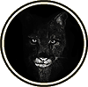

|

|
>> Содержание / Список кланов /
 BlackPanthers BlackPanthers
Наша история своими корнями уходит в далёкое прошлое…
В одной деревушке жил одинокий молодой человек, который очень хотел прославиться и стать легендарным воином. Изо дня в день он тренировался и готовился к тому, что скоро его жизнь измениться. Он был прав. Накопив немного денег, он решил отправиться на поиски своей судьбы, на поиски славы и успеха. В дороге он примкнул к воинам, которые называли себя Смертоносцами. Герой решил, что они помогут ему в его исканиях… Смертоносцы напали на ближайшую деревню, чтобы разорить её, они всегда так делали, нападали на тех, кто не мог себя защитить, но герой не знал об этом. В этой деревне жила старуха, которую местные жители прозвали Дикая кошка. Ходили слухи, что она может приручить любого из семейства кошачьих, она вечно намурлыкивала что-то себе под нос, что вызывало смех и издёвки со стороны окружающих, но её никогда не воспринимали всерьёз, считая сумасшедшей. Наш герой настолько был увлечён боем, что убивал каждого, кто попадался ему на пути: какой-то непонятный азарт охватил его и не давал возможности даже подумать, чьё сердце он пронзает мечём…Вокруг всё пылало: горели дома, доносились крики и стоны побеждённых…Смертоносцы решили стереть деревню с лица земли, но прежде, надо было осмотреть те дома, которые всепоглощающий огонь обошёл стороной..Взгляд героя был устремлён, на ближайший дом. Он ринулся туда, в надежде, что убьёт очередную жертву. Взломав дверь, он оказался в просторном затемнённом помещении, к нему спиной сидела хозяйка дома. Это была обыкновенная старуха, увидев которую, воин понял, что она не причинит ему вреда. Подойдя к ней, он начал различать какое-то мурлыканье. Решив, что женщина напугана и плачет, в нём проснулась жалость… И вдруг он оцепенел, из-за плеча старухи на него уставились два янтарных глаза. Это создание набросилось нанезваного гостя. Началась схватка…от душераздирающей боли воин потерял сознание..
Наступило утро. Воин проснулся. Что произошло?! Оглядевшись, он понял, что по-прежнему находится в доме старухи, но никого рядом не было.. Его мутило, но он медленно встал и решил осмотреться… Дом был очень старым, прогнившие доски скрипели под тяжёлым весом воина, на полках лежали какие-то непонятные предметы и книги, различные сухие травы были развешены пучками на стенах. Обернувшись в сторону двери, путник увидел выцарапанную надпись: Отныне вы едины! Считай это даром либо проклятьем…
Открыв дверь, его глазам предстала ужасающая картина: Море окровавленных и безжизненных тел было повсюду, запах горелой плоти и дерева вызывали тошноту…
- неужели это сделал я??? Боль пронзила его сердце, он не смог сдержать слёз отчаянья… Какой-то голос внутри него сказал: «Ты повинен в этой кровавой бойне. Отныне ты должен всё исправить…Ты должен посвятить свою жизнь защите невинных, твой меч должен стать карой для обидчиков слабых и нуждающихся. Если ты и будешь убивать, то только тех, кто заслуживает смерти! «Голос разума, я так и сделаю», - подумал он.
Смеркалось. Надо передохнуть перед дальней дорогой… Но вдруг что-то стало меняться. Дикая боль пронзила его тело, начало ломить кости, голова, казалось, сейчас лопнет, не выдержав, воин рухнул на землю. Очнувшись, он понял, что что-то не так…Земля стала намного ближе, движения бесшумней,…а руки..О нет, это были лапы. Да, именно, он превратился в того зверя, который нынче утром набросился на него..он превратился в пантеру… И опять раздался внутренний голос: Отныне мы едины, считай это даром или проклятьем! Ты хотел славы? Что же, теперь ты должен собрать свою армию и посвятить себя защите справедливости и чести на Земле. Твои сподвижники разделят твою учесть, и вы вместе понесёте этот крест, те, кто испугается, не стремятся улучшить мир и спасти его из бездны бессмысленных смертей и расправ с теми, кто слаб… «Но кто захочет жить так?!» В полном отчаянье герой начал скитаться по свету, но нашлись те, кто поддержал его и вступил в его ряды, они сражались за то, во что верили. За справедливость и честь в нашем жестоком мире… Так был создан клан BlackPanthers
Официальный сайт клана: http://blackpanthers.ucoz.ru/
|
 |
|